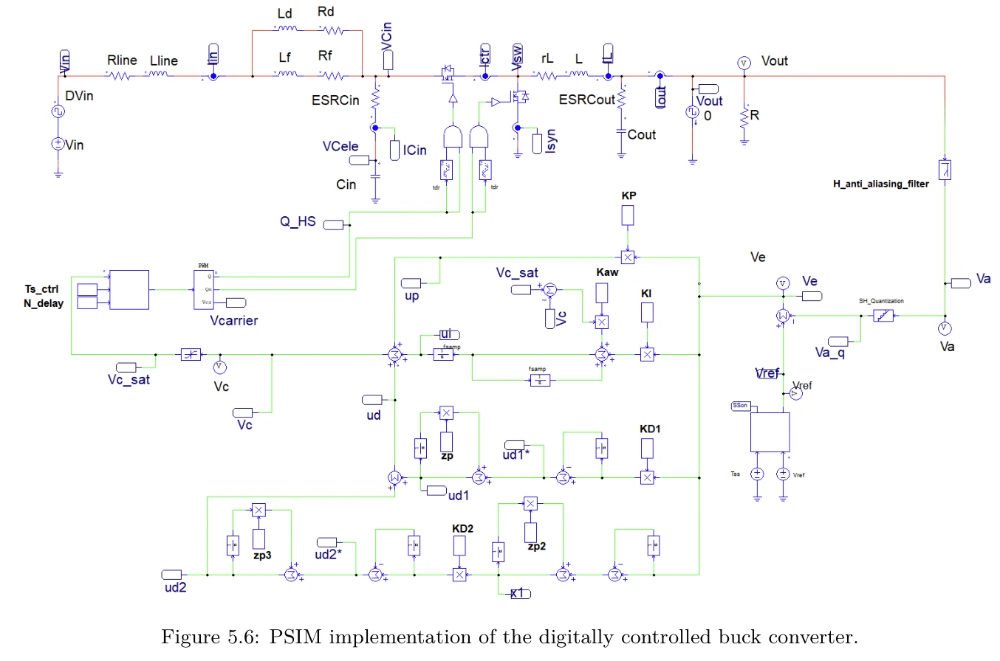
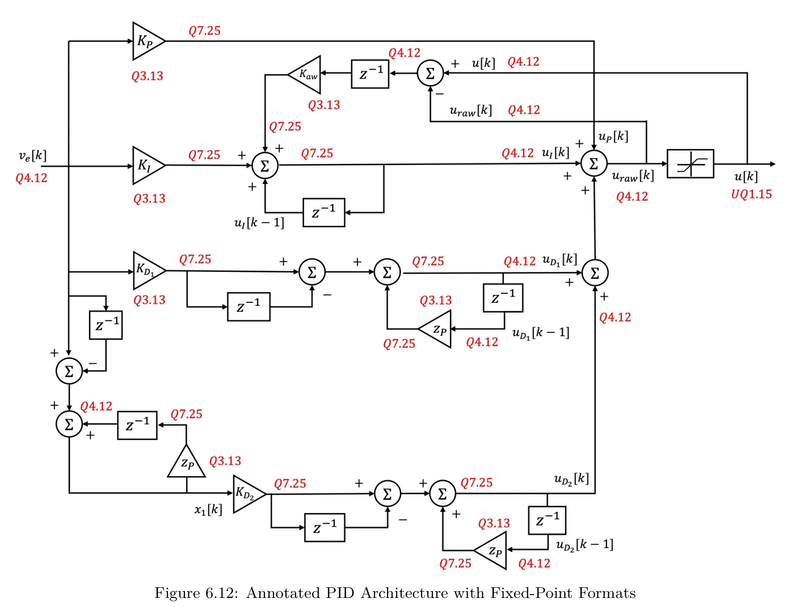
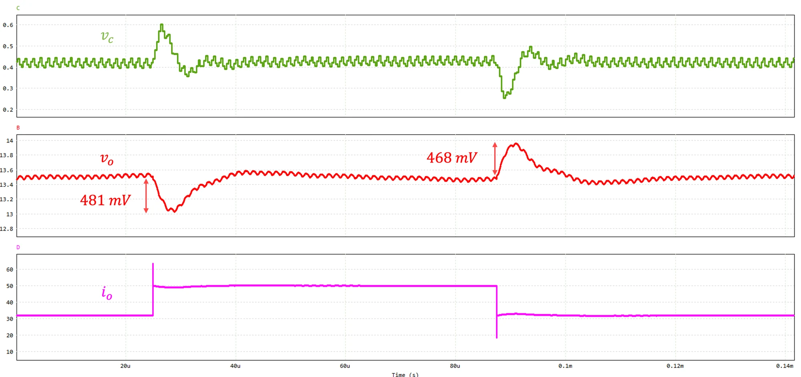
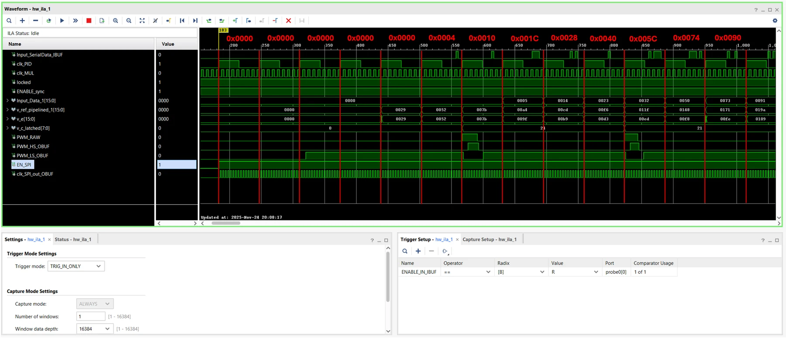
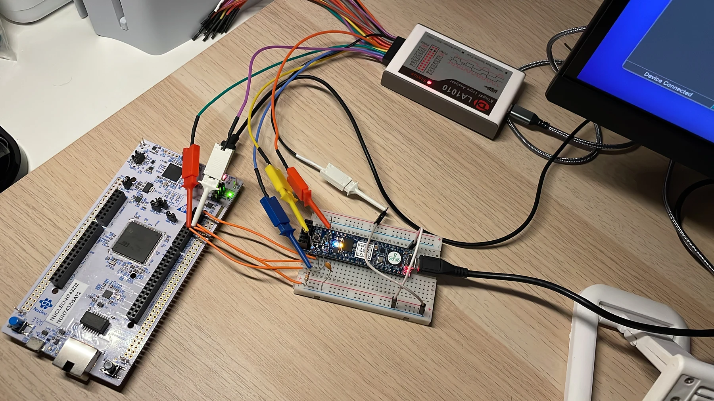

Requirements
Battery, load, ripple, efficiency and EMC constraints.
My MSc thesis at Sidereus Space Dynamics brings together a high-power synchronous buck converter, a delay-aware digital controller and a deterministic SystemVerilog implementation validated in simulation and hardware-in-the-loop.
The application is an avionics power distribution unit: a wide battery voltage must produce a stable rail while serving loads that can jump sharply in current. The 13.5 V converter output leaves margin for wiring losses so remote loads receive roughly 12 V. Efficiency, output ripple, thermal limits and conducted emissions are part of the design brief, not afterthoughts.
| Parameter | Target / range | Why it matters |
|---|---|---|
| Battery / effective input | 27–42 V / 26.93–41.95 V | Account for wiring drop |
| Regulated output | 13.5 V ±5% | Approximately 12 V at remote loads |
| Output current | 32 A nominal; 50 A peak | Worst-case load step |
| Nominal efficiency | ≥90% target | Losses and thermal budget |
| Output ripple | ≤1% of nominal output | Steady-state power quality |
| Conducted EMI | ≤96 dBµV limit | ECSS-related constraint |
Battery, load, ripple, efficiency and EMC constraints.
MOSFETs, magnetics, output and input filters.
Plant model, compensated loop and digital timing.
Fixed-point SystemVerilog ADC → controller → DPWM.
PSIM, RTL timing and STM32-based HIL.
Switching frequency was selected as a compromise among passive size, transient behaviour, switching losses and filterability of conducted emissions. The synchronous MOSFET pair was checked for conduction/switching loss and temperature. The output LC network meets ripple and transient constraints; the damped input EMI filter is then sized so it attenuates the switching fundamental without materially changing the controlled plant.
| Design item | Value / outcome |
|---|---|
| Switching frequency | 730 kHz |
| Output inductor | ≈675 nH; 75 A saturation rating |
| Output capacitor | ≈89.1 µF; ESR ≈2.25 mΩ |
| Input EMI at 730 kHz | ≈92.4 dBµV in analysis, below 96 dBµV limit |
| Loop crossover / phase margin | ≈73 kHz / ≈52° |

Electrical performance and EMC values here are results of analysis and simulation of the proposed converter, not a claim of a built high-power flight unit.
The power-stage model and compensator are developed together. Sampling occurs at four times the switching rate. The continuous-time design is discretized while accounting for ADC acquisition, computation and the DPWM update delay. A fixed-point double-lead PID, soft-start, saturation and anti-windup become a deterministic control path in SystemVerilog.

| Element | Value / purpose |
|---|---|
| Control sampling / update | 2.92 MHz = 4 × 730 kHz |
| Crossover / phase margin | ≈73 kHz / ≈52° in analysis |
| DPWM base | 8-bit implementation at ≈186.75 MHz |
| Effective resolution | Second-order delta-sigma error feedback |
| Timing protection | Soft-start, saturation, anti-windup and complementary outputs with dead time |
A high-resolution counter-only DPWM would demand an impractically fast clock. Second-order noise shaping improves effective duty-cycle resolution while retaining a feasible FPGA clock.
The custom RTL receives serial ADC-like samples, computes the fixed-point compensator, applies second-order delta-sigma modulation and generates complementary DPWM gate commands with enforced dead time. The Artix-7 prototype provides predictable sample-to-actuation latency rather than firmware scheduling jitter.

A serial ADC-like interface is exercised with reproducible stimuli derived from the converter model.
A custom PID datapath uses explicit formats, registers, controlled arithmetic and anti-windup.
Delta-sigma error feedback precedes a practical-clock DPWM with complementary timing and dead time.
Control simulations in MATLAB/PSIM explore line and load disturbances. Functional and post-implementation RTL simulations examine the digital path and timing; the programmed Artix-7 is then driven by an STM32-based serial ADC emulator in a hardware-in-the-loop bench. This validates the FPGA control chain separately from the simulated high-power stage.

| Metric | Result | Evidence / context |
|---|---|---|
| Load step, 32→50 A | ≈0.481 V undershoot | PSIM closed-loop model; <0.500 V limit |
| PID computation | 340 ns | FPGA core timing; ≈15× faster than 5 µs STM32 comparison |
| ADC-to-DPWM path | ≈1.25 µs | FPGA end-to-end chain |
| Implementation resources | 2,768 LUT; 1,064 FF | Vivado post-implementation report |
| Timing / estimated on-chip power | WNS +0.347 ns; ≈0.21 W | Timing closure; implementation power estimate |


Thesis carried out during the Sidereus Space Dynamics internship. Figures are drawn from the author-provided thesis and presentation; results distinguish simulated converter behaviour from FPGA prototype measurements.
The PDF contains selected original pages: abstract, introduction, core design steps, FPGA implementation, validation and results. Dedication and acknowledgements are excluded. For the complete thesis, send me a request.